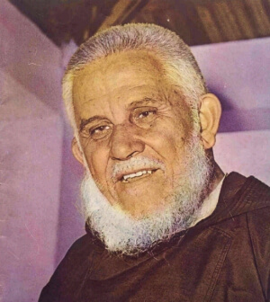
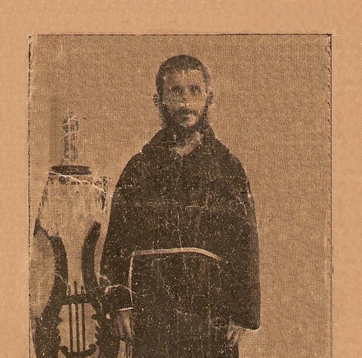
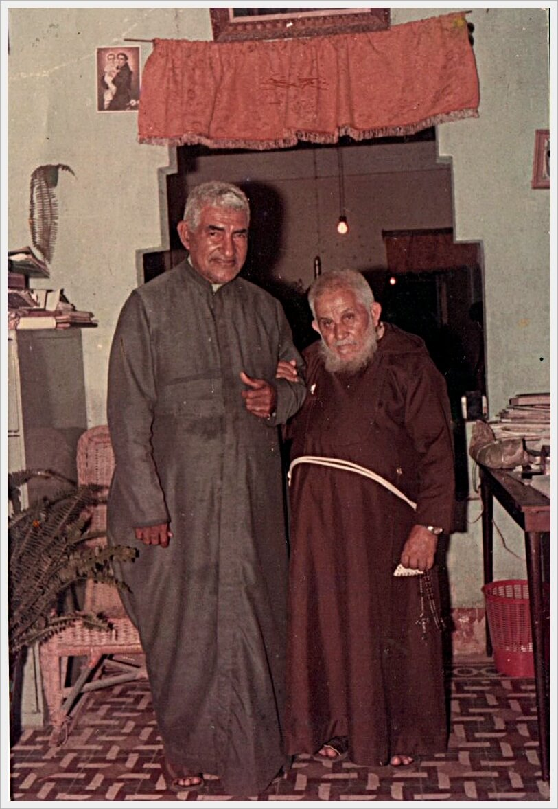
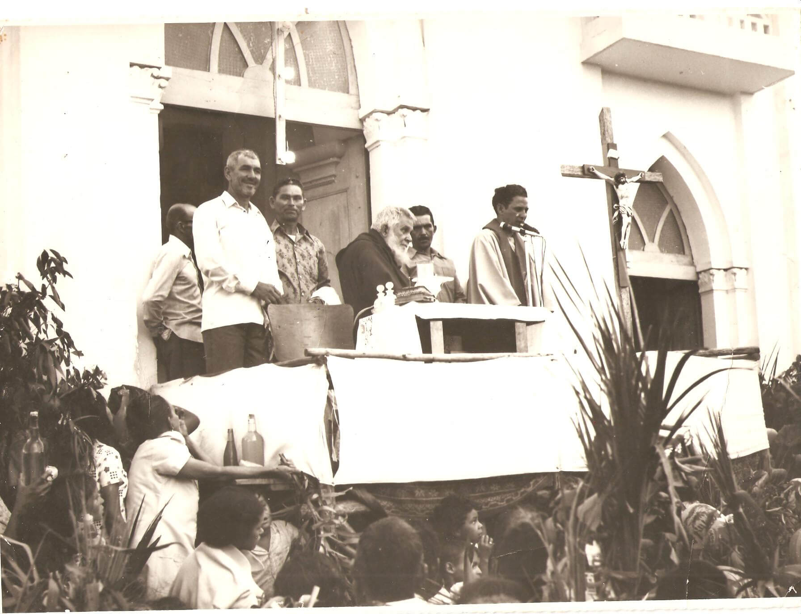

"O Santo do Sertão" — 66 anos percorrendo o Nordeste de jumento e a pé
"O povo precisa de quem lhes fale de Deus com o coração."
Enrico Angelo Damiani nasceu em 5 de dezembro de 1898 em Bozzano, uma pequena localidade da Toscana, na região de Lucca, no norte da Itália. Era filho de uma família camponesa simples e profundamente católica — contexto que moldou nele desde cedo uma espiritualidade enraizada na vida ordinária e na proximidade com os pobres.
Desde adolescente sentiu o chamado à vida franciscana. Em 1918, ingressou no noviciado dos Frades Menores Capuchinhos — o ramo mais austero da família franciscana, conhecido pela pobreza radical, pelo hábito marrom com capuz e pela missão de pregação itinerante entre o povo. Recebeu o nome religioso de Frei Damião do Bozzano. Foi ordenado sacerdote em 1922.
Nos anos seguintes, trabalhou como missionário itinerante na Itália — percorrendo vilas e aldeias toscanas pregando missões populares, um tipo de retiro comunitário de vários dias que renovava a fé das comunidades rurais. Era um pregador de rara eficácia: voz poderosa, linguagem acessível, profundidade espiritual genuína e uma presença que impressionava pela seriedade e pela humildade simultâneas.
Em 1931, Frei Damião embarcou para o Brasil. A missão era simples e temporária: pregar algumas missões populares no Nordeste, a pedido dos bispos da região, e retornar à Itália. Tinha 32 anos.
Chegou a Recife, percorreu os sertões de Pernambuco, Paraíba, Ceará, Rio Grande do Norte, Alagoas, Sergipe, Bahia, Piauí e Maranhão — e não voltou mais. Décadas passaram, guerras vieram e foram, o mundo mudou completamente — e Frei Damião continuava no sertão nordestino, de jumento, de caminhão velhos ou a pé, pregando missões de paróquia em paróquia.
Quando perguntado por que não voltou à Itália, respondia simplesmente: "Eu vim ao Brasil para uma missão e fiquei por amor ao povo nordestino. Aqui morrerei e aqui ressuscitarei."
A missão popular era uma tradição da Igreja Católica, especialmente no Nordeste: um missionário chegava a uma paróquia e durante 8 a 15 dias pregava manhã e noite, administrava confissões em massa, regularizava casamentos, batizava crianças e renovava a vida espiritual da comunidade. Era uma espécie de "revisão de vida" comunitária, realizada a intervalos de anos ou décadas.
Frei Damião tornara-se o mestre absoluto desse método. Suas missões atraíam multidões de cidades e vilarejos vizinhos — pessoas que percorriam horas a pé ou de animal para ouvir o "Fradinho" pregar. Calculou-se que ao longo da vida realizou mais de 1.500 missões em mais de 9 estados do Nordeste.
Sua pregação era direta, sem rodeios, com uma linguagem que o povo nordestino compreendia imediatamente. Falava do inferno sem eufemismos, da misericórdia de Deus com ternura genuína, e da necessidade de conversão com uma urgência que vinha claramente não da técnica retórica, mas da convicção pessoal. As pessoas choravam durante suas pregações — não pela manipulação emocional, mas pelo reconhecimento de que aquelas palavras as alcançavam onde ninguém mais chegava.
O sertão nordestino que Frei Damião percorreu durante seis décadas era um dos ambientes mais duros do Brasil: seca, pobreza extrema, analfabetismo, violência, cangaço, êxodo rural, fome. A fé católica popular — com suas promessas, peregrinações, festas de padroeiros e devoções — era frequentemente o único elo de sentido numa vida marcada pela dureza.
Frei Damião não ignorava essa realidade social. Ao longo dos anos, intermediou conflitos, defendeu trabalhadores rurais diante de proprietários poderosos, e usou sua enorme influência popular para pressionar autoridades em favor dos pobres. Não era um ativista político — mas era um homem que via nos pobres o rosto de Cristo e que não conseguia ficar em silêncio diante da injustiça.
Sua figura tornara-se parte da paisagem cultural e religiosa do Nordeste de forma única: era citado em músicas de forró, em cordéis, em causos populares. Padrinhos de batismo que levavam o nome "Damião" em homenagem ao Frei proliferaram por todo o sertão. Era reconhecido em qualquer lugar do Nordeste como uma espécie de patriarca espiritual da região.
Frei Damião era um homem de constituição física surpreendentemente resistente, apesar das condições extremas em que vivia — calor, poeira, alimentação simples, viagens exaustivas. Continuou pregando missões populares com pleno vigor até bem depois dos 80 anos. Aos 90 anos, ainda subia em palanques e pregava por horas com a voz poderosa de sempre.
Com o avançar da idade, a saúde foi declínando gradualmente. Os últimos anos foram vividos em Recife, no Convento dos Capuchinhos, onde recebia visitantes — bispos, políticos, pessoas comuns, doentes que buscavam sua bênção e sua oração. Mesmo sem poder mais pregar, sua presença continuava sendo um sinal de força para os que o procuravam.
Morreu em 25 de maio de 1997, em Recife, com 98 anos. A notícia de sua morte causou comoção em todo o Nordeste — rádios anunciaram a notícia, cidades decretaram luto, e o velório foi visitado por multidões que, muitas vezes viajando horas, queriam se despedir do "Fradinho" que havia marcado suas vidas ou as de seus pais e avós.
A causa de beatificação de Frei Damião foi aberta pela Arquidiocese de Olinda e Recife, e ele recebeu o título de Servo de Deus — o primeiro grau oficial do processo. Relatos de graças e curas atribuídas à sua intercessão chegam continuamente à Diocese.
Mas, de certa forma, o povo nordestino já havia feito sua própria canonização muito antes. Há décadas que imagens de Frei Damião são encontradas em altares domésticos ao lado de santos canonizados. Seus retratos adornam caminhões, portas de casa e muros pelo Nordeste inteiro. Velas são acesas em seu nome. Promessas são feitas pela sua intercessão.
É a santidade que não espera burocracia — a que o povo reconhece pelo fruto, pelo cheiro, pela vida. Um homem que veio da Itália para uma missão temporária e ficou 66 anos porque não conseguia abandonar aquele povo. Um frade que poderia ter vivido num convento confortável e escolheu o jumento no sertão. Um pregador que não precisava de microfone nem de efeitos especiais para encher de lágrimas uma praça inteira.
Frei Damião pertence ao Brasil — e especialmente ao Nordeste — de uma forma que poucos estrangeiros jamais pertenceram a qualquer terra. E o Nordeste o pertence de volta, com aquele amor fiel e teimoso que o sertão tem pelos seus.
98 anos de vida — da Toscana ao coração do sertão nordestino
5 Dez 1898
Nasce numa família camponesa toscana. Desde criança demonstra inclinação para a vida religiosa franciscana.
1918
Entra no noviciado dos Frades Menores Capuchinhos. Recebe o nome de Frei Damião do Bozzano.
1922
Ordenado padre na Itália. Começa a trabalhar como missionário itinerante em vilarejos e aldeias toscanas.
1931
Chega a Recife para uma missão temporária no Nordeste. Nunca mais voltaria à Itália. Tinha 32 anos.
1931 – 1990s
Percorre a pé, de jumento e de caminhão os sertões de 9 estados nordestinos. Realiza mais de 1.500 missões populares. Torna-se a figura religiosa mais amada do Nordeste.
Décadas de 1970–80
Usa sua enorme influência popular para intermediar conflitos e defender trabalhadores rurais diante de proprietários poderosos no Nordeste.
Anos 1990
Com a saúde em declínio, vive no Convento dos Capuchinhos em Recife. Continua recebendo multidões de visitantes que buscam sua bênção.
25 Mai 1997
Morre aos 98 anos em Recife. A comoção toma conta de todo o Nordeste. Multidões comparecem ao velório viajando horas para se despedir do "Fradinho".
Após 1997
A Arquidiocese de Olinda e Recife abre sua causa de beatificação. Recebe o título de Servo de Deus — primeiro grau do processo oficial.
O caminho de Frei Damião rumo ao reconhecimento oficial da Igreja
✦
Brasil · Arquidiocese de Olinda e Recife
A Arquidiocese de Olinda e Recife abriu formalmente a causa de beatificação de Frei Damião. Ele recebeu o título de "Servo de Deus" — o primeiro grau oficial do processo que pode levá-lo à beatificação e canonização. A causa está em curso, com investigação de sua vida, virtudes e possíveis milagres atribuídos à sua intercessão.
Causa em andamento · Arquidiocese de Olinda e Recife✦
Nordeste do Brasil · Devoção popular
Muito antes do processo oficial, o povo nordestino já havia feito sua própria canonização: imagens de Frei Damião em altares domésticos ao lado de santos canonizados, retratos em caminhões e portas de casa por todo o Nordeste, velas acesas em seu nome e promessas feitas pela sua intercessão. Relatos de graças e curas continuam chegando à Diocese de todo o Brasil.
Devoção popular · Nordeste · desde 1931Imagens da vida e do ministério de Frei Damião de Bozzano no sertão nordestino




Imagens utilizadas sob licença de seus respectivos autores. Créditos completos disponíveis aqui.
Documentação utilizada para a elaboração deste perfil
Frei Damião — O Santo do Nordeste
Pe. Marcelo Barros · Editora Vozes, 1998
Frei Damião de Bozzano — Vida e Missão
Frades Capuchinhos do Nordeste · Editora Capuchinhos, 2000
O Missionário do Sertão
Dom Helder Câmara · Depoimento sobre Frei Damião
Senhor Jesus, Tu que enviaste os Teus discípulos a percorrer os caminhos do mundo anunciando a boa notícia, concede-nos, pela intercessão do Servo de Deus Frei Damião de Bozzano, a fidelidade de quem permanece onde foi chamado — mesmo quando o chamado dura décadas e os caminhos são de pó e seca.
Ele veio para uma missão temporária e ficou 66 anos porque não conseguia abandonar aquele povo. Percorreu o sertão mais duro do Brasil de jumento, a pé, de caminhão velho — e em cada praça, em cada altar improvisado, encontrava rostos que reconhecia como filhos de Deus merecedores de toda a atenção e todo o amor de um coração capuchinho.
Servo de Deus Frei Damião, "Fradinho do Nordeste", intercede por todo o povo nordestino, pelos missionários itinerantes, pelos que pregam sem microfone e sem plateia famosa, e por todos os que escolhem ficar onde ninguém quer ficar. Que a Igreja do Brasil te eleve logo aos altares — e que o teu sertão continue a acender velas ao teu nome. Amém.
· Para uso privado · Aprovação eclesiástica recomendada ·